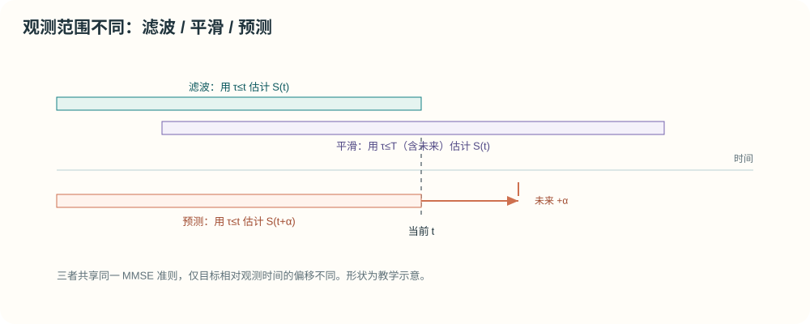
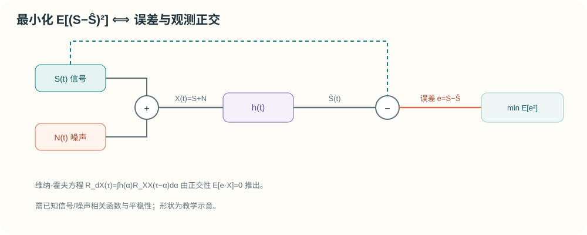
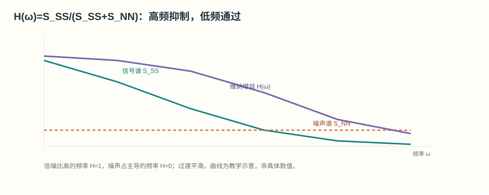
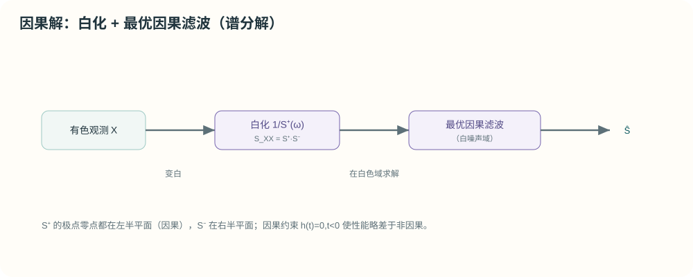

CHAPTER 21 · 统计推断与应用
维纳滤波
把上一章的正交性原理用到平稳信号的卷积模型，就得到维纳-霍夫方程。非因果解在频域是一句乘法——按信噪比加权；加上因果约束后，需要谱分解与白化，但仍是同一套 MMSE 逻辑。
- 区分滤波、平滑、预测，并列出维纳滤波的核心假设
- 由正交性原理写出维纳-霍夫方程，解出非因果频域解 H=S_dX/S_XX
- 说明因果解的谱分解—白化步骤，并知道模型失配的风险
三种模式与核心假设
从含噪观测 X(t)=S(t)+N(t) 中估计期望信号 S(t)，按目标时刻与观测范围分为三类：滤波（用 τ≤t 估计 S(t)）、平滑（用含未来的观测估计过去的 S(t)，精度最高但需延迟）、预测（用 τ≤t 估计 S(t+α)，最难）。三者共用同一 MMSE 准则，只是目标相对观测的时间偏移不同。
维纳滤波的成立依赖四个假设：S 与 N 联合平稳；信号与噪声的自相关/互相关（或功率谱）已知；滤波器线性；准则为最小化 E[(S−Ŝ)²]。
先验信息的代价：维纳滤波要求事先知道信号与噪声的二阶统计。若先验不准，性能会显著下降——这是它最主要的实际局限（本章末讨论）。

维纳-霍夫方程
设滤波器输出 Ŝ(t)=∫h(α)X(t−α)dα。由第 20 章的正交性原理，最优估计的误差与所有观测正交：E[(S(t)−Ŝ(t))X(τ)]=0（对 τ≤t）。代入即得连续形式的维纳-霍夫方程：
这是一个积分方程：未知的 h 出现在积分号内。它本质上是正交性原理在平稳卷积模型中的展开——若已用完观测中的有用信息，剩余误差就不应再含可预测成分。

非因果维纳滤波：频域除法
若允许用未来观测（不要求因果），对 (21.1) 两边做傅里叶变换，卷积变乘积：
当信号与噪声不相关时，S_dX=S_SS 且 S_XX=S_SS+S_NN，于是
这就是一个频域自适应衰减器：信噪比高的频率 H≈1 几乎无损通过，噪声占主导的频率 H≈0 被抑制，二者相当处平滑过渡。

因果维纳滤波：谱分解与白化
实际系统不能用未来观测，需 h(t)=0（t<0）。此时积分方程难解，经典方法是谱分解法：将观测功率谱分解为因果部分与反因果部分之积 S_XX(ω)=S⁺(ω)S⁻(ω)（S⁺ 极点在左半平面），先用 1/S⁺ 把有色观测白化，再在白色域设计最优因果滤波器，最后级联。因果解的性能总是略差于非因果解，因为缺少了未来观测中的信息。

| 特性 | 非因果 | 因果 |
|---|---|---|
| 频域形式 | H=S_dX/S_XX | 谱分解+白化+因果滤波 |
| 可实现性 | 不可（需未来） | 可以（仅过去） |
| MMSE | 理论最优 | 略差 |
| 典型应用 | 图像去噪、离线恢复 | 实时通信、语音增强 |
可复现核查
下面求解一个离散维纳滤波问题：信号为 AR(1)（a=0.8），噪声为单位白噪声，用 3 抽头非因果滤波器求 h 使均方误差最小，并验证正交性（正规方程）与频率增益在 [0,1]。纯 Python。
a = 0.8
Rss = [1 / (1 - a * a) * a ** m for m in range(3)] # [2.778, 2.222, 1.778]
Rxx = [Rss[0] + 1] + Rss[1:] # = Rss + 白噪声
R = [[Rxx[abs(i - j)] for j in range(3)] for i in range(3)]
def solve(A, b): # 小型高斯消元
n = len(b); M = [A[i][:] + [b[i]] for i in range(n)]
for c in range(n):
p = max(range(c, n), key=lambda i: abs(M[i][c]))
M[c], M[p] = M[p], M[c]
for i in range(n):
if i != c:
f = M[i][c] / M[c][c]
for j in range(c, n + 1): M[i][j] -= f * M[c][j]
return [M[i][n] / M[i][i] for i in range(n)]
h = solve(R, Rss) # 正规方程 R h = r_dX
res = [Rss[i] - sum(R[i][j] * h[j] for j in range(3)) for i in range(3)]
assert max(abs(v) for v in res) < 1e-9 # 正交性：残差为零
assert abs(sum(h) - 0.86) < 1e-9 # 三抽头截断之和
for snr in (0.1, 1.0, 10.0): # 频率增益在 [0,1)
assert 0 <= snr / (snr + 1) < 1
检查点：正规方程残差≈0（误差与观测正交），h≈[0.58,0.20,0.08]，和≈0.86（3 抽头是对全带宽解 H(0)≈0.96 的截断）。测试文件 examples/test_chapter_21.py 复用同一构造。
边界与陷阱
- 对模型失配敏感。当信号/噪声功率谱估计不准时，维纳增益会在某些频点过度抑制，产生听感极差的“音乐噪声”。常用改进：正则化 H=S_SS/(S_SS+βS_NN)（过减因子 β>1）、频域平滑、先验信噪比的递归估计（决策导向法）。
- 平稳性是硬前提。信号或噪声非平稳时，单一 H(ω) 不再适用；应改用适应时变的递推方法（下一章卡尔曼滤波）。
- 非因果解不可实现。H=S_dX/S_XX 需未来数据，只能用于离线处理；实时系统必须加因果约束。
- 有限长度带来误差。用有限抽头近似无限脉冲响应会引入截断误差，抽头越多越接近理论最优。
- 需要先验二阶统计。若无法得到可靠的 S_SS、S_NN，维纳滤波的性能无从保证。
下一章把估计器写成时域递推形式，处理非平稳信号：卡尔曼滤波。
参考与核查依据
- N. Wiener, Extrapolation, Interpolation, and Smoothing of Stationary Time Series, MIT Press, 1949：维纳滤波原始推导。
- S. M. Kay, Fundamentals of Statistical Signal Processing: Estimation Theory, Prentice Hall, 1993：维纳-霍夫方程与因果/非因果解。
- M. H. Hayes, Statistical Digital Signal Processing and Modeling, Wiley, 1996：离散维纳滤波与正规方程。
- MIT OpenCourseWare · Stochastic Processes, Detection and Estimation：正交性原理与最优滤波。
- ProbabilityCourse · Stationary Processes：宽平稳与相关函数背景。